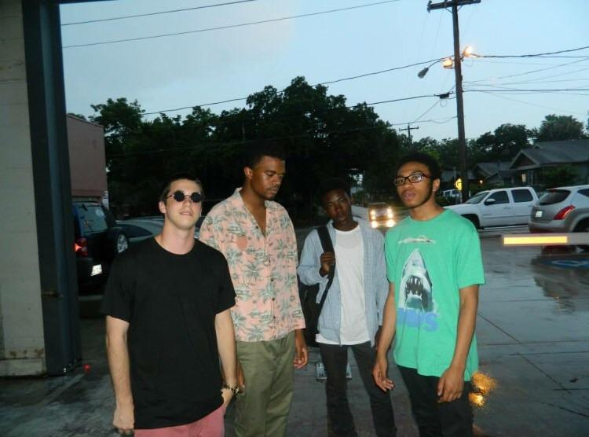

2010–2014: Formation and AliveSinceForever
Although not all of them were a part of the original group, Kevin Abstract, Ameer Vann, Joba, Matt Champion, and Merlyn Wood met as teenagers, as they all attended The Woodlands High School in Woodlands, Texas. In 2010, Abstract made
a post on the KanyeLive online forum (now known as KanyeToThe) asking if anyone wanted to form a band, to which over 30 users responded. After this AliveSinceForever was then formed, although the band only went active in 2012.
In 2013, AliveSinceForever released their debut EP album, The ASF EP. The lineup consisted of Abstract, Vann, Dom McLennon, Mic Kurb (later known as Rodney Tenor) and approximately 26 other members. At the end of 2014, AliveSinceForever
disbanded to rebrand as Brockhampton.

2014–2016: Name change and All-American Trash
Following the release of Abstract's MTV1987, AliveSinceForever rebranded as Brockhampton and added several new members, some of whom were recruited through the Kanye West fan forum KanyeToThe. In January 2015, Brockhampton released their debut single,
"Bet I" accompanied by a video directed by members Henock "HK" Sileshi and Franklin Mendez. "Bet I" was removed from all streaming platforms in 2017, although the music video can still be found on YouTube. On June 16, 2015, Brockhampton
released their second single, "Hero". That same month, Brockhampton won the VFiles Loud contest, winning them a professionally-directed music video for their next single "Dirt", released through Fool's Gold Records.On March 24,
2016, Brockhampton released their debut mixtape, All-American Trash for free. The project focuses on highlighting the group's individual members, and was led by the music video "Flip Mo", performed by Merlyn Wood and featuring
Dom McLennon.

2017: Saturation trilogy
In January 2017, Brockhampton released a new standalone single and music video, "Cannon". In May 2017, Brockhampton released "Face", the first single and video promoting their debut album Saturation. Throughout the month, Brockhampton released several
singles and music videos in promotion of the album, including "Heat", "Gold", and "Star", all of which were directed by Abstract and shot locally in their neighborhood of South Central, Los Angeles, California.The same month, it was
announced that Brockhampton was going to be the subject of the upcoming Viceland series American Boyband, set to premiere June 8, 2017. A standalone music video, titled "Lamb" was released on June 8, 2017.Saturation was released on
June 9, 2017 to critical acclaim, and brought new attention to the group.
Following the release of Saturation, Abstract stated that Brockhampton were already working on a follow up, tentatively titled Saturation
II and was set to be released in August. On August 1, 2017, Brockhampton released the debut single and video from Saturation II, titled "Gummy".A week later, they released the second single and video, titled "Swamp". On August 15,
they released the third single, titled "Junky", and later that day, they announced via Twitter the release date for Saturation II.
The album's final single and video "Sweet" was released on August 22. This was followed the
same day by the surprise release of "Follow", after which Abstract announced via Twitter that the Saturation Trilogy would be concluded with Saturation III. Saturation II was released on August 25 to further acclaim and attention.
On September 14, 2017 Abstract revealed that the trilogy would be released as a box set alongside a collection of unreleased demos prior to the year's end.
On December 1, Brockhampton officially announced Saturation III
as their final studio album; however, the group later clarified that this was not a literal statement, and they were likely to release further albums.Fans heard snippets of the album through Instagram livestreams from Kevin Abstract.On
December 12, they released the album's lead single and video, entitled "Boogie". On December 14, 2017, Brockhampton announced their fourth studio album, Team Effort, slated for release in 2018, along with a new single from Saturation
III, "Stains". Saturation III was released on December 15 to even further critical acclaim. The group also filmed a self-funded, self-made feature-length movie to celebrate the Saturation trilogy, directed by Kevin Abstract himself.
2018: RCA signing, Ameer Vann's departure, and Iridescence
In March 2018, Brockhampton announced that Team Effort had been delayed indefinitely, and that they would instead release their fourth studio album Puppy in mid-2018. The next week, they announced via social media that they had signed a record deal with
Sony's RCA Records. Billboard reported that according to label sources, the deal was worth more than $15 million for six albums over three years.
Puppy was delayed following allegations of sexual misconduct
against founding member Ameer Vann. Although Vann admitted to being mentally and verbally abusive, he denied allegations of sexual abuse. On May 27, Brockhampton announced that Vann would no longer be a part of the group, stating that
they "were lied to" and apologizing "for not speaking up sooner". The group canceled the remainder of their tour dates, including an appearance at the Governors Ball Music Festival.Afterwards, it came to light through McLennon that
Vann had also set a friend up to be robbed but "didn't have the heart" to tell them until after he had already been kicked out.
On June 20, the band appeared on The Tonight Show Starring Jimmy Fallon, in their late night television
debut, and their first performance since announcing Vann's departure. They debuted the track "Tonya", accompanied by guest vocalists Jazmine Sullivan, Ryan Beatty and Serpentwithfeet, as well as revealing the new title of their upcoming
album, The Best Years of Our Lives. Following the performance the band resumed their summer tour, headlining the Agenda Festival in Long Beach, California. The next month the group announced a Beats 1 radio show Things We Lost in the
Fire Radio, promising "new music all summer". The show's first episode was aired on July 6, 2018, featuring the debut of single "1999 Wildfire", released that day with an accompanying music video. The track features vocals by Jazze
Pha.On July 18, the single "1998 Truman" was debuted as a part of the show's second episode. A music video for the track was released later that day. On July 27, the group released the single "1997 Diana", accompanied by a music video.
Later that day the song was featured on the third episode of Things We Lost in the Fire Radio, alongside the unfinished track "Don't Be Famous". On August 26, 2018, the group announced that a new album titled Iridescence, recorded
over ten days in Abbey Road Studios, would be released in September. The band also announced dates of their "i'll be there" tour, which began on October 3, 2018 in Mesa, Arizona, concluding on December 6, 2018 in Las Vegas, Nevada.
Iridescence was officially released on September 21, consisting of fifteen new songs, including the revamped version of "Tonya" without Sullivan and Beatty. It debuted at number one on the US Billboard 200 on September 30, 2018, becoming
Brockhampton's first chart-topping album. In January 2019, the band received their first ever nomination for the "Best International Group" at the BRIT Awards, which took place at The O2 Arena on February 20, 2019.
2019: Ginger
Weeks after releasing his solo album Arizona Baby in April 2019, Abstract revealed in an Instagram story that Brockhampton was working on a new album. On July 1, Brockhampton posted a snippet of a new song on Twitter. On July 18, they
tweeted another snippet, this time revealing the album title, Ginger, and a release month of August. The group subsequently released four singles with music videos leading up to the album's release: "I Been Born Again" on July 31;
"If You Pray Right" on August 7;[16] "Boy Bye" on August 14; and "No Halo" featuring singer Deb Never on August 21. The album was released on August 23. Brockhampton released a video two days later for "Heaven Belongs to You" featuring
slowthai. On August 26, the band announced via Instagram and Twitter they would begin their Heaven Belongs to You Tour, with openers slowthai and 100 Gecs, from October to December 2019 in support of the new album.
The band
made its first appearance on The Ellen Show on September 6, 2019, performing "Sugar" and "Boy Bye", though the latter was not televised. Later that same day, they performed "No Halo" with Deb Never on Jimmy Kimmel Live!. The group
was a guest on The Tonight Show Starring Jimmy Fallon, interviewed and then performing "Sugar" with vocals by Ryan Beatty on October 24. On January 14, 2020, "Sugar" became the group's first Billboard hit, debuting at number 70 on
the Billboard Hot 100 and remaining on the chart for nine weeks, peaking at number 66. On March 6, a remix version of the track featuring English singer Dua Lipa, American singer Jon B and Beatty was released. The track also became
the group's first platinum record on April 29, 2020.
§
2020: Technical Difficulties
In late April 2020, following the coronavirus pandemic, the band began releasing non-studio produced singles under the title "Technical Difficulties" to their YouTube channel. These songs were recorded during the band's self-induced quarantine. Livestreams
preceding the release of these singles were streamed on the Twitch platform for fans. The songs "N.S.T", "things cant stay the same", "M.O.B", "twisted", "I.F.L", "baby bull", "downside", "fishbone" & "chain on / hold me" have been
released on YouTube, and many more have been premiered on their livestreams. Along with the single releases, members have confirmed on the live-streams that a sixth album has been "sonically finished", and to expect a release this
summer. Abstract and Henock Sileshi later revealed the initials of their Sixth album being RR. In August 2020, Abstract and Romil also started their own label called 'Video Store'.[citation needed] 2020 was the first year since 2016
in which Brockhampton did not release a studio album or a mixtape.
2021: Roadrunner: New Light, New Machine
In January 2021, Kevin Abstract teased the sixth Brockhampton album's title, Roadrunner: New Light, New Machine, through merch via Instagram.
On January 2, 2021, Brockhampton released a snippet of the album's lead single, Buzzcut,
on Instagram. On March 24, 2021, the band released "Buzzcut", featuring Danny Brown, followed by an announcement on March 26 of the album, titled Roadrunner: New Light, New Machine. On March 31, Kevin Abstract took to Twitter to confirm
the album's track list. He also announced that another Brockhampton album will be released in 2021, which was later delayed until next year. The second single "Count On Me" was released on April 2, and the album was released worldwide
on April 9.The music video for "Count On Me" was released on April 13 featuring Lil Nas X and Dominic Fike. In addition to being featured on the Space Jam: A New Legacy soundtrack, the band recorded a song titled "MVP", sampling and
interpolating the Kris Kross hit, "Jump".